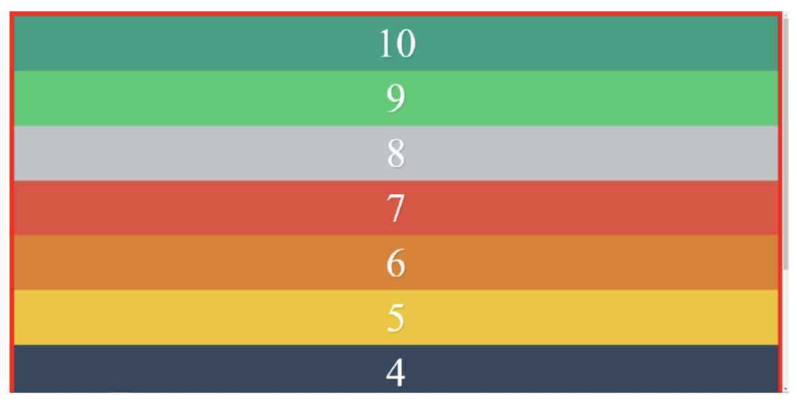

1
2
3
4
5
6
7
8
9
10
Realiza un diseño de divs que se asemeje lo máximo posible al siguiente, usando Flexbox. Debes utiliza flex-direction. Salvo que tengas una resolución de pantalla muy grande, será normal que se muestre la barra de scroll vertical. Debes mostrar los 10 divs, en total, y con sus números en orden inverso.
